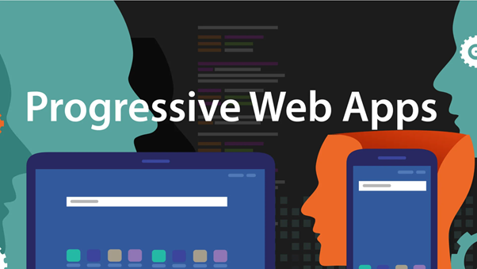

Professora Denilse Cardoso
Adalberto Costa de Andrade Junior 0030481921012
Quando um desenvolvedor começa sua jornada na area de desenvolvimento e começa a criar suas primeiras linhas de código, vão surgindo com essa aprendizagem logo as primeiras dúvidas. E agora quais linguagens devo aprender, devo programar para web, mobile ou ambos, devo me especializar em algum framework? O objetivo da pesquisa a seguir tem o intuito de esclarecer as principais diferenças e similaridades de cada área de desenvolvimento e com isso facilitar a compreensão acerca dos principais aspectos sobre cada tipo de desenvolvimento seja aplicações nativas, sites ou progressive web apps.
O aplicativo nativo fica armazenado no dispositivo (smartphone) e é baixado diretamente pelas lojas, Google Play (Android) ou App Store (iOS). Este app é desenvolvido pelas linguagens nativas destas plataformas e podem utilizar as funcionalidades específicas do dispositivo, como câmera, GPS, contatos etc., além de possuir uma integração diretamente com as bibliotecas de cada um deles. O app nativo tem um custo mais elevado, pois tem uma linguagem própria e específica do sistema operacional, desenvolvida para cada plataforma. Para você publicar o aplicativo nas lojas é necessária uma aprovação, ou seja, ele precisa estar de acordo com as políticas internas de cada uma delas. Além disso, normalmente, o app também funciona no modo offline.
O que chamamos de site aqui no Brasil, é chamado de website no idioma inglês. Então vamos dividir as duas palavras: web e site. Web significa rede é o nome dado a rede mundial de computadores (world wide web). Site significa lugar. Com isso, podemos entender que website é um lugar na rede. E como encontrar esse local na rede é outra história. Para encontrar um site, precisamos falar de domínio, que nada mais é que o seu endereço online, no nosso caso, nosso domínio é hostinger.com.br. Pode conferir aí no campo de pesquisa do seu navegador. Um site é um conjunto de páginas com informações reunidas e disponibilizadas através de um servidor. Um site pode ter diferentes formatos, como blog, site ou loja virtual, e tratar de diversos assuntos e segmentos. Para ter um site, você precisa de um serviço de hospedagem de sites e um registro de domínio.
Progressive web apps são funcionalidades que conseguem desenvolver web apps, ou seja, páginas que rodam em qualquer dispositivo e circunstância, mesmo sem internet (desde que pré-carregadas enquanto o dispositivo estiver online). Independentemente do browser utilizado, o usuário tem todas as funcionalidades do aplicativo disponíveis, o que antes só era possível ser feito com apps nativos. Assim, a interface é a mesma de um aplicativo, mas a velocidade é igual a de um site. A questão da velocidade é essencial para aumentar o número de engajamento e retenção do PWA. No entanto, existem algumas funcionalidades que essa tecnologia deve ter para de fato funcionar. Primeiramente, como já está no nome, a progressividade. Os PWA’s devem funcionar em todos os browsers, para todos os usuários. E para funcionar em qualquer browser, ele também precisa ser responsivo, se adequando às telas de tablet, smartphones e desktop. A conexão deve funcionar, com o usuário conectado ou não, e é preciso ser app-like, ou seja, quem está usando esse app precisa se sentir confortável, como se estivesse navegando em um aplicativo nativo. As atualizações devem ser automáticas, qualquer anormalidade é detectada e prontamente modificada, sem precisar de uma aba de atualização, como é feito hoje nas app stores. E, por último, mas não menos importante, o PWA tem de ser seguro. Isto é, trabalhar unicamente com HTTPS.
Com a pesquisa pude concluir que todas as maneiras de desenvolvimentos podem se ser utilizadas para a construção de aplicações, independente de suas vantagens e desvantagens, o ideal é analisar a demanda de cada aplicação com a intenção de identificar as principais características (como necessidade de conexão intensa com internet para troca de informações, alto número de acesso por parte dos usuário, etc) permitindo um melhor planejamento e disponibilização de recursos e funcionalidades para aplicação que será produzida.